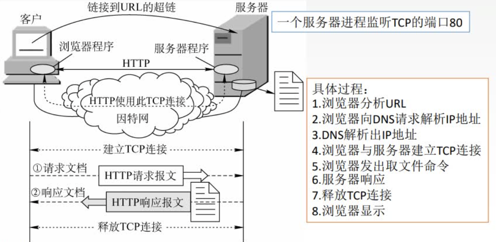
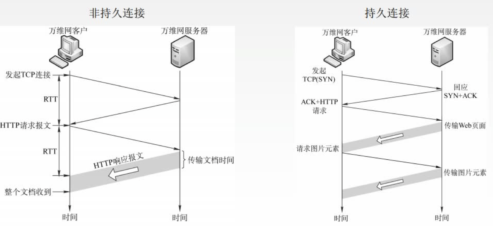
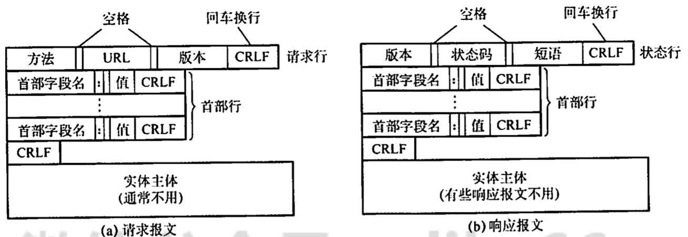
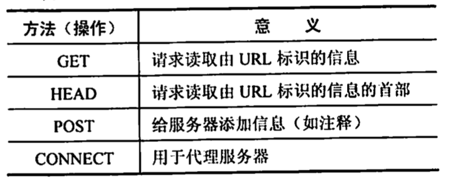
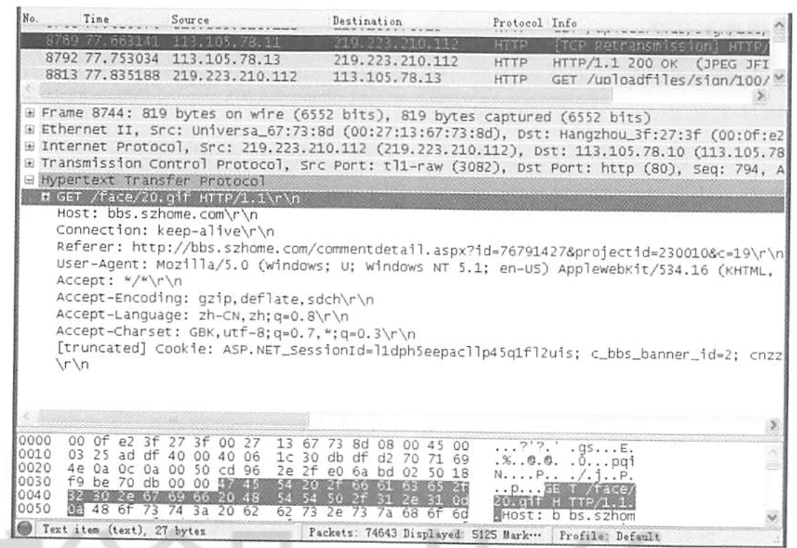
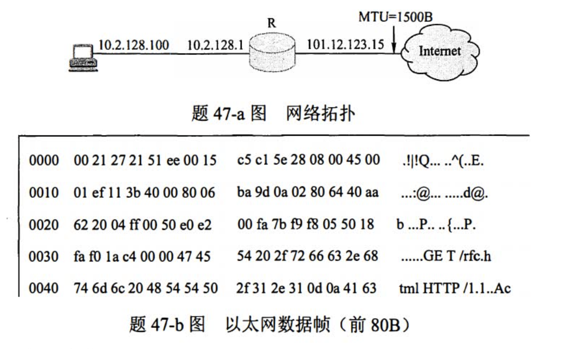
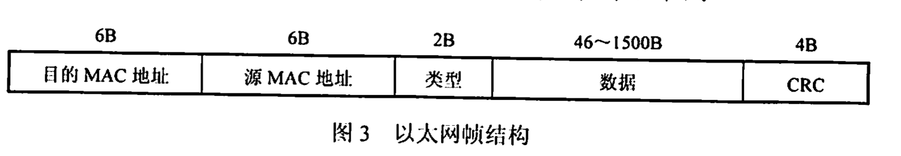
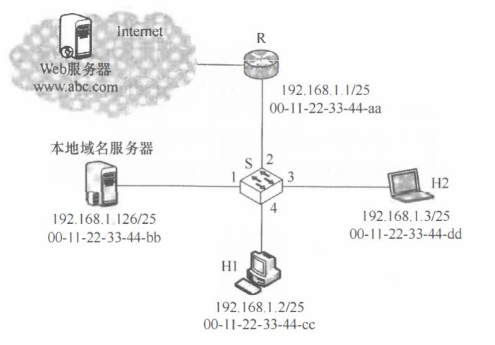

万维网WWW
2022.08.17
WWW的概念与组成结构
万维网(World Wide Web,WWW)是一个分布式、联机式的信息存储空间，在这个空间中：一样有用的事物称为一样“资源”，并由一个全域“统一资源定位符”(URL)标识。这些资源通过超文本传输协议(HTTP)传送给使用者，而后者通过单击链接来获取资源。
万维网使用链接的方法能非常方便地从因特网上的一个站点访问另一个站点（即"链接到另一个站点")，从而主动地按需获取丰富的信息。超文本标记语言(HyperText Markup Language, HTML)使得万维网页面的设计者可以很方便地用一个超链接从本页面的某处链接到因特网上的任何一个万维网页面，并能够在自己的计算机屏幕上显示这些页面。
万维网的内核部分是由三个标准构成的：
- 统一资源定位符(URL)。负责标识万维网上的各种文档，并使每个文档在整个万维网的范围内具有唯一的标识符URL。
- 超文本传输协议(HTTP)。一个应用层协议，它使用TCP连接进行可靠的传输，HTTP是万维网客户程序和服务器程序之间交互所必须严格遵守的协议。
- 超文本标记语言（HTML)。一种文档结构的标记语言，它使用一些约定的标记对页面上的各种信息（包括文字、声音、图像、视频等）、格式进行描述。
URL是对可以从因特网上得到的资源的位置和访问方法的一种简洁表示。URL相当于一个文件名在网络范围的扩展。URL的一般形式是：<协议>://<主机><端口><路径>
<协议>指用什么协议来获取万维网文档，常见的协议有http、ftp等；
<主机>是存放资源的主机在因特网中的域名或IP地址：<端口>和<路径>有时可省略。在URL中不区分大小写。
万维网以客户/服务器方式工作。浏览器是在用户主机上的万维网客户程序，而万维网文档所驻留的主机则运行服务器程序，这台主机称为万维网服务器。客户程序向服务器程序发出请求，服务器程序向客户程序送回客户所要的万维网文档。工作流程如下：
- Web用户使用浏览器（指定URL)与Web服务器建立连接，并发送浏览请求。
- Web服务器把URL转换为文件路径，并返回信息给Web浏览器。
- 通信完成，关闭连接。
万维网是无数个网络站点和网页的集合，它们在一起构成了因特网最主要的部分（因特网也包括电子邮件、Usenet和新闻组)。
超文本传输协议(HTTP)
HTTP定义了浏览器（万维网客户进程）怎样向万维网服务器请求万维网文档，以及服务器怎样把文档传送给浏览器。从层次的角度看，HTTP是面向事务的(Transaction-oriented)应用层协议，它规定了在浏览器和服务器之间的请求和响应的格式与规则，是万维网上能够可靠地交换文件（包括文本、声音、图像等各种多媒体文件）的重要基础。
HTTP操作过程
从协议执行过程来说，浏览器要访问WWW服务器时，首先要完成对WWW服务器的域名解析。一旦获得了服务器的IP地址，浏览器就通过TCP向服务器发送连接建立请求。万维网的大致工作过程如图所示。每个万维网站点都有一个服务器进程，它不断地监听TCP的端口80（默认），当监听到连接请求后便与浏览器建立TCP连接。然后，浏览器就向服务器发送请求获取某个Web页面的HTTP请求。服务器收到请求后，将构建所请求Web页的必需信息，并通过HTTP响应返回给浏览器。浏览器再将信息进行解释，然后将Web页显示给用户。最后，TCP连接释放。

在浏览器和服务器之间的请求与响应的交互，必须遵循规定的格式和规则，这些格式和规则就是HTTP。因此HTTP有两类报文：请求报文（从Wb客户端向Web服务器发送服务请求）和响应报文（从Web服务器对Web客户端请求的回答）。用户单击鼠标后所发生的事件按顺序如下（以访问清华大学的网站为例）：
1)浏览器分析链接指向页面的URL(http://www.tsinghua.edu.cn/chn/index.htm)。
2)浏览器向DNS请求解析www.tsinghua.edu.cn的IP地址。
3)域名系统DNS解析出清华大学服务器的IP地址。
4)浏览器与该服务器建立TCP连接（默认端口号为80）。
5)浏览器发出HTTP请求：GET/chn/index.htm。
6)服务器通过HTTP响应把文件index.htm发送给浏览器。
7)释放TCP连接。
8)浏览器解释文件index.htm,并将Web页显示给用户。
HTTP特点
Keywords:
HTTP使用TCP。
Cookie，为用户产生唯一识别码，set-cookie。
HTTP/1.0，非持久链接。一个请求两个RTT（建立TCP+传文件）。
HTTP/1.1，持久链接。
- 非流水线方式：请求一个文件发一个。
- 流水线方式：逐个地连续发出对各个引用对象的请求。
HTTP使用TCP作为运输层协议，保证了数据的可靠传输。HTTP不必考虑数据在传输过程中被丢弃后又怎样被重传。但是，HTTP本身是无连接的（务必注意）。也就是说，虽然HTTP使用了TCP连接，但通信的双方在交换HTTP报文之前不需要先建立HTTP连接。HTTP是无状态的。也就是说，同一个客户第二次访问同一个服务器上的页面时，服务器的响应与第一次被访问时的相同。因为服务器并不记得曾经访问过的这个客户，也不记得为该客户曾经服务过多少次。
HTTP的无状态特性简化了服务器的设计，使服务器更容易支持大量并发的HTTP请求。在实际应用中，通常使用Cookie加数据库的方式来跟踪用户的活动（如记录用户最近浏览的商品等)。Cookie的工作原理：当用户浏览某个使用Cookie的网站时，该网站服务器就为用户产生一个唯一的识别码，如“123456”，接着在给用户的响应报文中添加一个Set-cookie的首部行“Set cookie:123456”。用户收到响应后，就在它管理的特定Cookie文件中添加这个服务器的主机名和Cookie识别码，当用户继续浏览这个网站时，会取出这个网站的识别码，并放入请求报文的Cookie首部“Cookie::123456”。服务器根据请求报文中的Cookie识别码就能从数据库中查询到该用户的活动记录，进而执行一些个性化的工作，如根据用户的历史浏览记录向其推荐新品等。
HTTP既可以使用非持久连接，也可以使用持久连接(HTTP/1.1支持)。对于非持久连接，每个网页元素对象（如JPEG图形、Flash等)的传输都需要单独建立一个TCP连接，如图所示（第三次握手的报文段中捎带了客户对万维网文档的请求）。请求一个万维网文档所需的时间是该文档的传输时间（与文档大小成正比）加上两倍往返时间RTT(一个RTT用于TCP连接，另一个RTT用于请求和接收文档)。每个对象引用都导致2xRTT的开销，此外每次建立新的TCP连接都要分配缓存和变量，使万维网服务器的负担很重。所谓持久连接，是指万维网服务器在发送响应后仍然保持这条连接，使同一个客户（浏览器）和该服务器可以继续在这条连接上传送后续的HTTP请求和响应报文，如图所示。

持久连接又分为非流水线和流水线两种方式。对于非流水线方式，客户在收到前一个响应后才能发出下一个请求，服务器发送完一个对象后，其TCP连接就处于空闲状态，浪费了服务器资源。HTTP/1.1的默认方式是使用流水线的持久连接，这种情况下，客户每遇到一个对象引用就立即发出一个请求，因而客户可以逐个地连续发出对各个引用对象的请求。如果所有的请求和响应都是连续发送的，那么所有引用的对象共计经历1个RTT延迟，而不是像非流水线方式那样，每个引用都必须有1个RTT延迟。这种方式减少了TCP连接中的空闲时间，提高了效率。
HTTP的报文结构
Keywords：
- 请求报文与相应报文格式
- GET、HEAD、POST、CONNECT
HTTP是面向文本的(Text-Oriented),因此报文中的每个字段都是一些ASCII码串，并且每个字段的长度都是不确定的。有两类HTTP报文：

请求报文：从客户向服务器发送的请求报文
响应报文：从服务器到客户的回答
HTTP请求报文和响应报文都由三个部分组成。从图可以看出，这两种报文格式的区别就是开始行不同。
开始行：用于区分是请求报文还是响应报文。在请求报文中的开始行称为请求行，而在响应报文中的开始行称为状态行。开始行的三个字段之间都以空格分隔，最后的“CR”和“LF”分别代表“回车”和“换行”。请求报文的“请求行”有三个内容：方法、请求资源的URL及HTTP的版本。其中，“方法”是对所请求对象进行的操作，这些方法实际上也就是一些命令。表中给出了HTTP请求报文中常用的几个方法。

首部行：用来说明浏览器、服务器或报文主体的一些信息。首部可以有几行，但也可以不使用。在每个首部行中都有首部字段名和它的值，每一行在结束的地方都要有“回车”和“换行”。整个首部行结束时，还有一空行将首部行和后面的实体主体分开。
实体主体：在请求报文中一般不用这个字段，而在响应报文中也可能没有这个字段。
下图所示为使用Wireshark捕获的HTTP请求报文的示例，下面结合前几章的内容对请求报文（图中下部分）进行分析。根据帧的结构定义，在图6.15所示的以太网数据帧中，第1~6个字节为目的MAC地址（默认网关地址)，即00-0fe2-3f-27-3f;第7~12个字节为本机MAC地址，即00-27-13-67-73-8d;第1314个字节08~00为类型字段，表示上层使用的是IP数据报协议。第15~34个字节（共20B)为P数据报的首部，其中第27~30个字节为源P地址，即db-df-d2-70,转换成十进制为219.223.210.112;第3134个字节为目的P地址，即71-69-4e-0a,转换成十进制为113.105.78.10。第35~54个字节（共20B)为TCP报文段的首部。从第55个字节开始才是T℃P数据部分（阴影部分），即从应用层传递下来的数据（本例中即请求报文)，GET对应请求行的方法，/face/20gif对应请求行的URL,HTTP/1.1对应请求行的版本，左边数字是对应字符的ASCIl码，如'G'=0x47、E=0x45、T=0x54等。图6.15的请求报文中首部行字段内容的含义，建议读者自行了解，也可以自己动手抓包分析。

右下角开始的“…？？.'gs…E.%@.@.0…pgi”等是上面介绍过的第1一54个字节中对应的ASCI码字符，而这些字符在这里不代表任何意义。
| 应用程序 | 协议 | 端口号 |
|---|---|---|
| FTP数据连接 | TCP | 20 |
| FTP控制链接 | TCP | 21 |
| TELNET | TCP | 23 |
| SMTP | TCP | 25 |
| DNS | UDP | 53 |
| TFTP | UDP | 69 |
| HTTP | TCP | 80 |
| POP3 | TCP | 110 |
| SNMP | UDP | 161 |
下面的(C)协议中，客户机与服务器之间采用面向无连接的协议进行通信。
A.FTP
B.SMTP
C.DNS
D.HTTP
从协议分析的角度，WWW服务的第一步操作是浏览器对服务器的（C)。
A.请求地址解析
B.传输连接建立
C.请求域名解析
D.会话连接建立
使用鼠标单击一个万维网文档时，若该文档除有文本外，还有三幅gif图像，则在HTTP/1.0
中需要建立()次UDP连接和()次TCP连接。【A】
A.0,4
B.1,3
C.0,2
D.1,2
下列关于Cookie的说法中，错误的是(A)。
A. Cookie存储在服务器端
B. Cookie是服务器产生的
C. Cookie会威胁客户的隐私
D. Cookie的作用是跟踪用户的访问和状态
仅需Web服务器对HTTP报文进行响应，但不需要返回请求对象时，HTTP请求报文应该使用的方法是（D)。
A.GET
B.PUT
C.POST
D.HEAD
在如下条件下，计算使用非持续方式和持续方式请求一个Web页面所需的时间：
1)测试的RTT的平均值为150ms,一个gif对象的平均发送时延为35ms。
2)一个Web页面中有l0幅gif图片，Web页面的基本HTML文件、HTTP请求报文TCP握手报文大小忽略不计。
3)TCP三次提手的第三步中捎带一个HTTP请求。
4)使用非流水线方式。
- 建立TCP连接时间：150ms(一个RTT)
- Get HTML文件与传送HTML文件：150ms
- Get gif文件与传送gif文件：150+35=185ms
- 非持续方式：每次都要建立一次TCP，300+(150+185)*10=3650
- 持续方式：第一次建立TCP，300+185*10=2150
【2011统考真题】某主机的MAC地址为00-15-C5-C1-5E-28,IP地址为10.2.128.100（私有址)。图1是网络拓扑，图2是该主机进行Web请求的一个以太网数据顿前80B的十六进制及ASCII码内容。

请参考图中的数据回答以下问题。
1)Web服务器的IP地址是什么？该主机的默认网关的MAC地址是什么？
64.170.98.32，00-21-27-21-51-ee
2)该主机在构造图2的数据顿时，使用什么协议确定目的MAC地址？封装该协议请求报文的以太网帧的目的MAC地址是什么？
ARP, FF-FF-FF-FF-FF-FF
3)假设HTTP/1.1协议以持续的非流水线方式工作，一次请求，响应时间为RTT,rfc.html页面引用了5幅JPEG小图像。问从发出图2中的Web请求开始到浏览器收到全部内容为止，需要多少个RTT?
(TCP连接-1RTT)+(html-1RTT)+(JPEG-5RTT)=7RTT错❌
从web发请求开始！已经建立了TCP了。。。6RTT
4)该帧封装的IP分组经过路由器R转发时，需修改IP分组头中的哪些字段？
名称 修改前 修改后 源IP 10.2.128.100 101.12.123.15 生存时间 16 15 头部校验和 （若IP分组的长度超过输出链路的MTU,则总长度字段、标志字段、片偏移字段也会发生变化。）
注：以太网数据帧结构和P分组头结构分别如图3和图4所示。


【2021统考真题】某网络拓扑如题47图所示，以太网交换机S通过路由器R与Internet互联。路由器部分接口、本地域名服务器、H1、H2的IP地址和MAC地址如图中所示。
在t0时刻H1的ARP表和S的交换表均为空，H1在此刻利用浏览器通过域名
www.abc.com请求访问Web服务器，在t1时刻(t1>t0)S第一次收到了封装HTTP请求报文的以太网帧，假设从t0到t1,期间网络未发生任何与此次Web访问无关的网络通信。请回答下列问题。
1)从t0到t1期间，H1除了HTTP,还运行了哪个应用层协议？从应用层到数链路层，该应用层协议报文是通过那些协议进行逐层封装的？
2)若S的交换表结构为<MAC地址，端口>，则t1时刻S交换表的内容是什么？
3)从t0到t1期间，H2至少接收到几个与此次Web访问相关的帧？接收的是什么帧？帧的目的MAC地址是什么？

【答案】：
DNS; UDP,IP,CSMA/CD
MAC地址 端口 00-11-22-33-44-cc 4 00-11-22-33-44-aa 2 00-11-22-33-44-bb 1 由步骤2)的分析可知，H2至少会接收到2个和此次Wb访问相关的帧。接收到的均是封装ARP查询报文的以太网帧；这些帧的目的MAC地址均是FF-FF-FF-FF-FF-FF。第一次是不知道DNS服务器，进行广播。第二次是不知道路由器，进行广播。